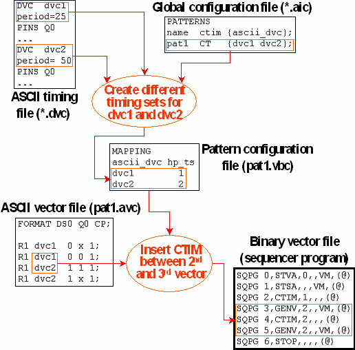

Inserting CTIM Between Vectors
The MAPPING section of the pattern configuration file must associate every ASCII device cycle within the ASCII vector file with a timing set. If the ASCII device cycles of two successive ASCII vectors are mapped to different timing sets, then the vector translation inserts a CTIM instruction between these vectors into the sequencer program of the pattern.
The timing translation creates the pattern configuration files automatically, and determines the timing sets to which the different ASCII device cycles of the pattern are mapped as follows.
If the ctim column of the pattern is set to CT in the global configuration file, and if two ASCII device cycles associated with the pattern have different periods, or ait is called with the -Mt option (ait command line parameters), then the timing translation creates different timing sets for these two ASCII device cycles with respect to the pattern in question. Accordingly, these ASCII device cycles will be mapped to different timing sets in the pattern configuration file. In all other cases all ASCII device cycles will be mapped to the same timing set.
Example
The following figure shows the information flow leading to the automatic insertion of CTIM instructions between two vectors:
